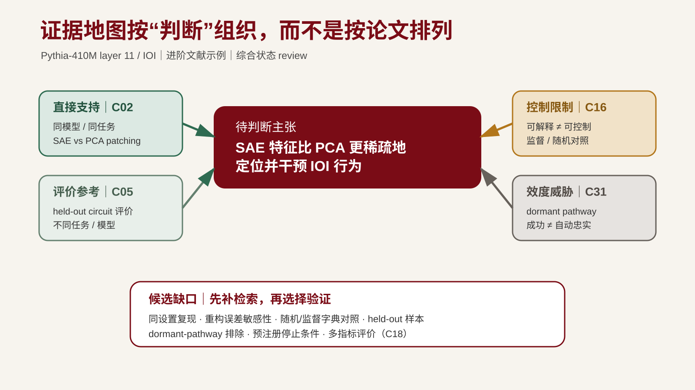

L5 按需方法案例输入¶
身份：保留的教学构造或具名来源分析；按各段说明区分。它不是学生的默认个人项目，也不要求跨课连续完成。以下保留原案例叙述；其中跨课措辞描述该构造包的历史关系，不规定当前课堂进度。
七、方法示例：从阅读卡到证据地图¶
以下保留阅读卡方法示例。以下论文 A-E、主张、检索式和拟议实验均为虚构教学样例，不对应真实论文、真实检索结果或实证结论；它们只用于练习从阅读卡到证据地图的动作。本节为教师预制的五条记录，不是学生的课前卡片要求；本人第二张卡在本课形成。本课的动作链：
先将上表A–E按用途整理：A提供定义与方法，B是设计线索，C提醒指标适用范围，D提示“字段填满”不能代替“条件保留”，E保留可读性这一质量维度。AI若归纳成“五篇共同支持阅读卡减少遗漏”，应逐格指出它把方法要求、指标和实际效果混在了一起。
当前缺口G1是：在相同源文本和可比评价下，阅读卡与自由摘要的真实限定条件遗漏是否有差异。对G1再作窄检索，允许扩展“structured summary”“condition omission”等相关表达并核对实际含义；保存来源、语法和结果，不预设零命中，也不把一种词面查询当完整检索。
若仍未找到可比结果，记录为当前材料范围内的缺口。它值得研究的理由是可能改变摘要核验方式；可行性先用三份构造源文本校准遗漏定义和标注，再为真实项目确定抽样与重复。这个试探不能证明真实效果，更不能预先确认H1机制。
把综合结果写成四句：界定问题；说明已有定义和方法依据；指出测量差异与直接效果缺口；提出下一项检索或试探。G1进入候选题池，与其他来源的问题比较，L6再选择。本人第二张卡和证据地图在既有项目内形成，不要求先做五张卡。
公开 MI 平行演示：支持、限制与效度威胁同图¶
L4 当前以 IOI 为教师主读，学生只带本人第一张卡进入本课。下面保留既有 Pythia／SAE 文献链作为不同设置的进阶对照，不再视为 L4 已完成的三张卡。完整可编辑工件见 mi-evidence-map-demo.md。

图注：课程自绘证据结构图。C02 是同任务直接支持；C05 是不同任务的外部支持；C16 与 C31 分别提供控制性限制和 patching 效度威胁；C18 提供多指标评价。来源与许可见 assets/README.md（未公开；请查对应公开来源）。
这张图的关键不是论文数量，而是一个判断的证据结构：
- 当前可支持：复现 C02 的 SAE-vs-PCA 最小比较有研究价值且可执行；
- 当前不可支持：仅凭 patching efficiency 把结论升级为因果忠实；
- 当前缺失：同设置的重构误差敏感性、随机/监督字典对照、held-out 样本和 dormant-pathway 排除；
- 失败回写：初版把 Fig.3 写成“因果忠实证明”，经 C31 核验后收窄为 intervention-efficiency 主张，并把效度缺口回写到 L6 问题与 L9 对照。
因此这条失败不是要删除的错误，而是 CP1 可接受的真实“被放弃问题版本”：记录原因、处理方式与回写位置后，它成为研究判断证据。